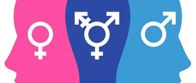

能用变性手术来定义跨性别者吗？
Transgender
如何定义跨性别者?
Transgender
了解跨性别
跨性别一词的来源：
在最初，英文的Transgender（跨性别者）这个字是美国的维吉妮亚·普林斯在1970年代创造的，用来与Transsexual（变性者）这个名词作对照。
跨性别是一个概括性术语，指代性别认同不同于其被指派性别的个体或群体。在此概括性术语范围内的个体可能认同于与此相关的一系列术语，如跨性别男性、跨性别女性、性别酷儿等。
跨性别与顺性别相对，顺性别指其性别认同与其被指派性别相同的个体。
❤
Transgender
如何定义跨性别者？
虽然跨性别一词的具体定义仍在讨论之中，但有一个广为接受的解释：跨性别是指在心理层面上，个体无法认同自己天生的性别，坚信自己应该属于另一种性别。
我们要明白一点，那就是跨性别者不一定都会选择进行医学性别重整治疗（变性手术），因为他们对手术的看法各不相同。
有一部分跨性别者倾向于不进行手术，而另一些跨性别者则迫切希望进行手术以改变生理性别，这类人群就是我们通常所说的变性人。
究竟是男跨女多，
还是女跨男多？
当我们说到两个基本的跨性别者时，通常使用的名称为：Trans man（跨性别男性，女身男心，FtM）、Trans woman（跨性别女性，男身女心，MtF）。
在过去，人们认为MtF的数量要比FtM多，然而实际上，两者比例接近1:1。
跨性别者存在着和性取向一样的认同问题，就是有一部分跨性别者明明感受的到自己多多少少有些性别焦虑，却因为不完全符合典型跨性别者（FtM、MtF，想变性）的特征，而拒绝承认自己是跨性别者。
还在为声音而烦恼，还在为不敢说话焦虑。
其实改变声音并不难，不用手术也能做到！
扫描名片，关注伪音教学公众号。
告诉你正确掌握声音的奥秘！
End